图4-1 从用户请求到下一步行动适合窗口原尺寸打开SVG查看细节教学示意：实线表示行动选择，虚线表示新信息或决定使任务说明需要更新。图省略了执行内部步骤；“条件足够”针对下一动作，不表示任务全部未知已经消除，也不把任务说明本身当作授权。补查无新线索且缺口仍阻断下一动作时暂停该动作；独立且已授权的工作可继续。返回所属章节
图5-1 每次下钻都围绕一个待解决的问题适合窗口原尺寸打开SVG查看细节建议机制：箭头表示本次信息获取与选择的关系，虚线只在有新线索时重入。权限不足进入缺口处置，不通过换入口绕过；需要扩大访问范围时先取得相应授权。图中的“适用”只针对当前用途，材料真实性与规范效力仍需按其类型核对。返回所属章节
图15-1 候选查询不能代替原问题适合窗口原尺寸打开SVG查看细节建议机制：实线表示检索与使用判断，虚线表示补查取得新来源后的回读。原问题中的条件应一直带到最后的核对；“合并候选、补查、核对前提”是本章提出的处理步骤，不能从图反推为 DevOS 已有自动能力。所有检索仍服从当前访问权限。返回所属章节